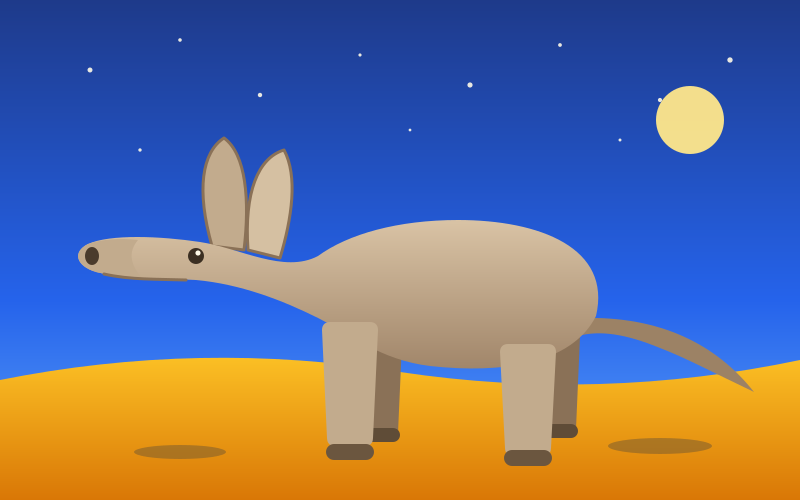

Aardvark
This is a picture of an aardvark. That is the entire purpose of this page.

Three True Facts
- The name comes from Afrikaans for “earth pig,” though the aardvark is not a pig and is not closely related to one.
- It can dig itself out of sight in a matter of minutes, and it eats termites by the tens of thousands in a single night.
- Its nearest living relatives include elephants and manatees, which says something about how strange the family tree really is.
Nothing else on this page. Go look at the Exhibits if you want something interactive.